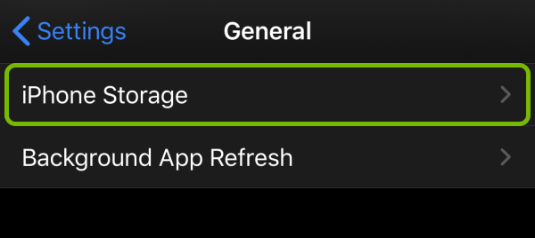

Many IOS users experience a drop in performance after owning their device for a while. Utilizing tips from this page can help restore your device to its full potential and maximize its preformance.
Improving Start Up Speed
There are a variety of tips that can be utilized to increase speed upon start up for IOS devices.
1. Remove unncessary widgets.Luckily, removing widgets is incredibly easy on IOS. All you have to do is just long press the widget also known as entering "Jiggle" mode. Next you tap the remove widget button in the upper lefthand corner of the widget.
2. Check for any potential IOS Updates.
The reason that your device is slow to start up could be because there is an available update. To check this, first open your settings.
Then, tap on general.
Next tap on software update. If there is a software update. Here you can see if there are any available updates and dowload them if there are.
Maintaining device performance
After buying an IOS device, most people's immediate thoughts aren't "how do I get my
device to operate at peak preformance". But, there are many tricks that can be utilized to make sure your device is
operating as smoothly as possible.
1.Disable automatic updates.
Even though having your settings set to update your
apps automatically make your life easier, allowing this to happen drains battery life and takes up more space on the CPU.
To make sure this feature is turned off,
go to settings
Press the iTunes & App Store button and turn the toggle switch off.
Cleaning up system storage
As you utilize your devices regularly, your device storage becomes higher. If your device is an IOS, when storage is low, IOS will automatically free up space while installing or downloading new data. However, this feature should not solely be relied on to clean up the system storage on your device. Instead, there are various other ways to clear up storage.
1. Figure out which apps take up the most space.To figure out which apps take up the most space, go to settings, and press general. Once you press general, press the button that says storage. You can then select any app and see how much space the app itself uses and how much space is taken up by the app's data and documents.

Doing this allows you to be able to strategically clear up data heavy applications that you may not be using.
2.Restart Your IOS device.
When you restart your device, caches, temporary files, and activity logs get deleted. To do this, open settings and click on general. Once you have clicked on general, select shut down.

Now hold the power button to turn your device back on.
Keeping your device secure
1. Sign in with your Apple ID.
Many apps and websites offer the ability to sign in with Apple upon accessing their homepage.
Signing in this way limits the information that is shared about you and provides two-factor authentication.
2. Subscribe to iCould Plus.
Subscribing to iCloud Plus allows you to utilize a feature called Hide My Email. This feature generates random email addresses
so you don't have to share your personal email address online. The random address then fowards emails to your personal email account.
3. Use iCloud
Private Relay.
iCloud Private Relay prevents networks and websites from tracking your information and creating a detailed profile about you.
When this feature is on, any traffic leaving your iPhone is encrypted and prevents websites from seeing your IP address and providers from seeing
your activity.